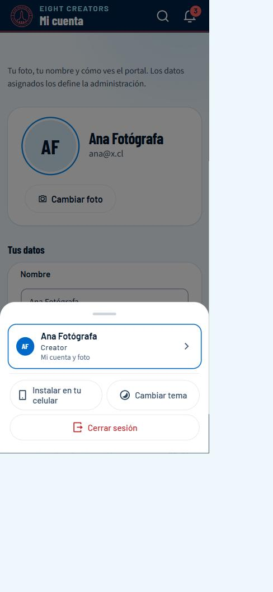
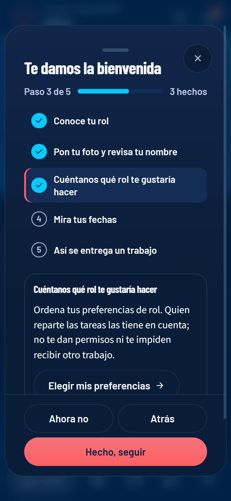
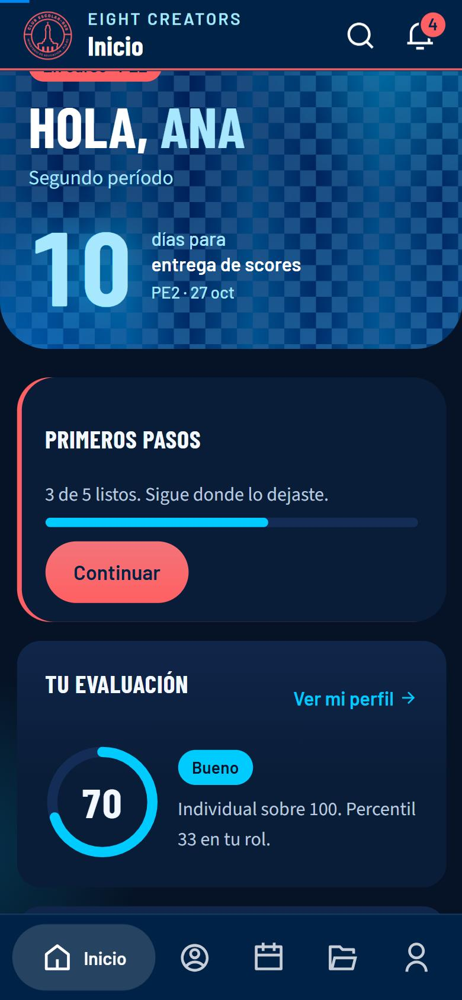
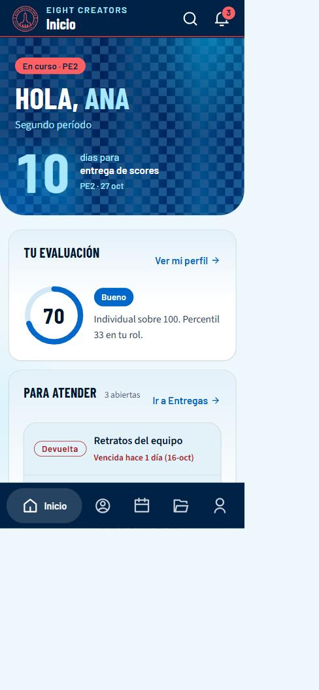
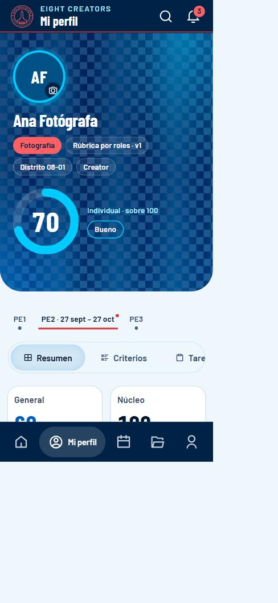
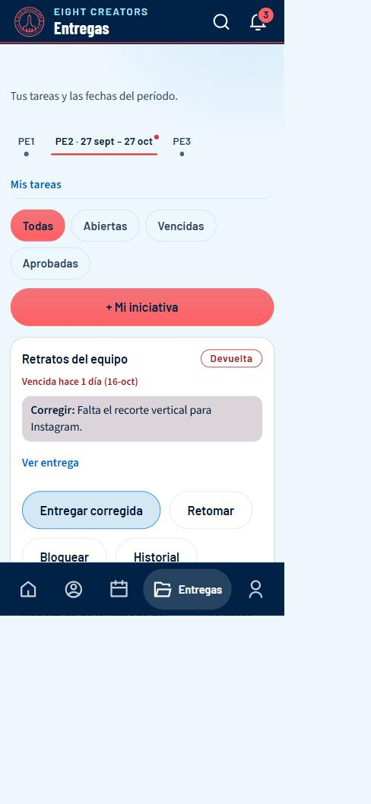
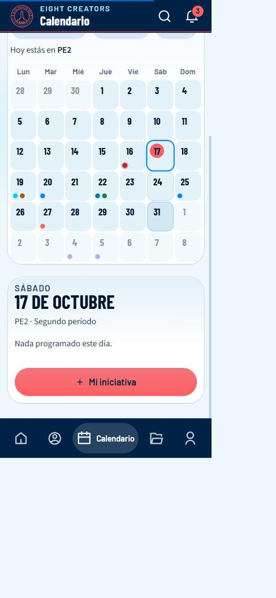
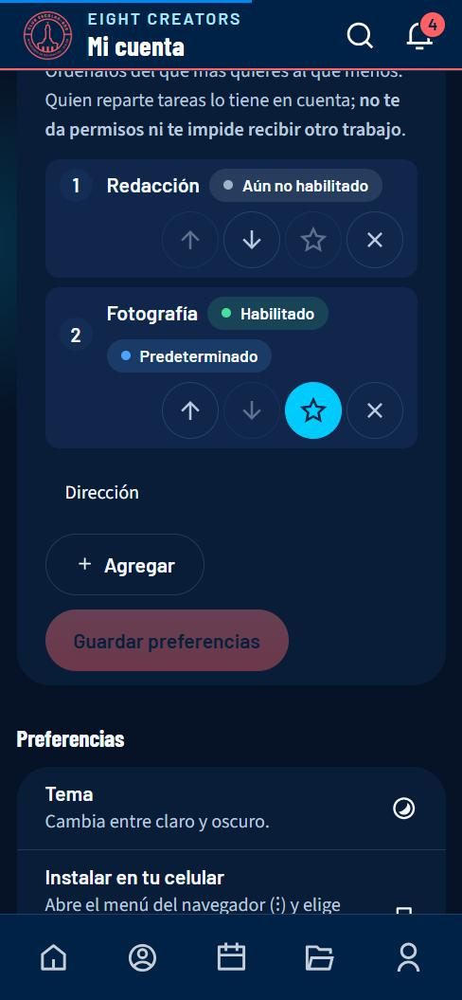

EIGHT CREATORS LABs · CELIDER 08 Santiago
Manual para miembros
Cómo usar el portal de EIGHT CREATORS LABs si eres Creator
Aquí ves cómo vas, qué tienes pendiente y qué viene. Este manual cubre todo lo que puedes hacer hoy, paso a paso, en computadora y en celular.
Las capturas son del entorno de pruebas del portal con datos de ejemplo (nombres y cifras inventados). Si lees este manual en computadora verás las capturas de computadora; en el celular, las de celular.
1Entrar y moverte por el portal
La dirección del portal es eight-coms.vercel.app. Funciona en cualquier navegador moderno, en computadora y en celular.
Crear tu cuenta
- Abre el portal y toca Crear cuenta.
- Escribe tu nombre, tu correo y una contraseña. La barra de seguridad te dice si es débil o fuerte.
- Revisa tu correo y pulsa el enlace de Confirmar mi correo. Si no llega, mira en «Spam».
- Espera la aprobación de la administración: hasta entonces, al entrar verás un aviso de que tu acceso está pendiente. Cuando te aprueban, te llega un correo y ya puedes entrar.
Iniciar sesión y recuperar la contraseña
- En Entrar escribe tu correo y tu contraseña.
- Si la olvidaste, toca Olvidé mi contraseña: te enviamos un código de verificación de 6 cifras. Escríbelo y elige la nueva clave.
Cómo está organizado
En computadora
El menú vertical azul de la izquierda lleva a cada sección. Arriba tienes Buscar (atajo Ctrl + K) para saltar a una persona o sección. Abajo, tu nombre abre Mi cuenta, y los iconos sirven para cambiar el tema (claro/oscuro) y salir. El botón Avisos muestra cuántos avisos tienes sin leer.
En celular
Arriba hay una cabecera con el nombre de la pantalla, la lupa (buscar) y la campana (avisos). Abajo, una barra de iconos: solo el destino en el que estás muestra su nombre; los demás son solo icono. El último botón (Más o Cuenta) abre un panel con el resto de secciones, tu cuenta, el tema y Cerrar sesión. Ese panel se cierra con la X, tocando fuera o arrastrando la rayita de arriba hacia abajo.

Instalar el portal como una app
Puedes tenerlo en la pantalla de inicio de tu celular, con su icono, sin la barra del navegador.
En computadora
En Chrome o Edge, usa el icono de instalar de la barra de direcciones, o el menú ⋮ → «Instalar EIGHT CREATORS LABs».
En celular
Android (Chrome): abre Mi cuenta → Instalar en tu celular y acepta. Si no aparece el cuadro, menú ⋮ → «Instalar app». iPhone (solo Safari): toca el botón Compartir (el cuadro con la flecha hacia arriba) → Añadir a pantalla de inicio. En iPhone, Chrome y otros navegadores no pueden instalarla.
2Bienvenida y novedades
Hay dos recorridos y te toca uno según tu caso: la bienvenida, si llegaste ahora, y las novedades, si ya usabas el portal. En los dos se abre sola una vez, con progreso («Paso 3 de 5») y puedes dejarla a medias y retomarla.
Si llegaste ahora: la bienvenida
La primera vez que entras se abre sola una guía de cinco pasos: conocer tu rol, poner tu foto, contar qué rol te gustaría hacer, mirar tus fechas y cómo se entrega un trabajo. Cada paso explica qué es y te lleva a la pantalla donde se hace.

- Lee el paso y toca Hecho, seguir. Si el paso tiene un botón (por ejemplo Elegir mis preferencias), te lleva a esa pantalla y tu avance queda guardado.
- Puedes dejarla a medias con Ahora no. En Inicio queda una tarjeta Primeros pasos con tu avance y un botón Continuar: retomas justo donde ibas.
- Algunos pasos se marcan solos si ya los hiciste (por ejemplo, si ya tienes foto o preferencias de rol).
- Al terminar, la tarjeta desaparece. Puedes repasarla cuando quieras desde Mi cuenta → App → Bienvenida, o Empezar de nuevo.

Si ya usabas el portal: las novedades
En vez de la bienvenida ves Novedades del portal: cinco pasos con lo que cambió, cada uno con un botón que te lleva a esa pantalla. Son Mi cuenta ordenada en pestañas, tu rol con lo que se espera de él, tus preferencias de rol, tu historial de todos los períodos y actividades solo para quien corresponde. Se abre sola la primera vez; después queda la tarjeta Novedades en Inicio hasta que la termines, y puedes repasarla desde Mi cuenta → App.

3Inicio: qué pasa ahora
Es la primera pantalla. Responde a «qué necesito hacer ahora».

- Banda azul: el período en curso y cuántos días faltan para la próxima fecha (por ejemplo, la entrega de scores).
- Tu evaluación: tu nota del período con su nivel (Excelente, Bueno, En Proceso o Bajo). Si aún no se publica, dice cuándo se publica. Ver mi perfil te lleva al detalle.
- Para atender: tus tareas que piden acción, primero las devueltas y luego por fecha. Ir a Entregas las abre.
- Próximas fechas: las fechas clave del período y en cuántos días son.
4Mi perfil y cómo se calcula tu evaluación
En Mi perfil está tu cabecera (foto, nombre, rol, versión de la rúbrica, distrito) y el anillo con tu nota. Abajo eliges el período (PE1, PE2…) y cuatro pestañas.

| Pestaña | Qué muestra |
|---|---|
| Resumen | Tus indicadores del período (abajo) y la «lectura rápida»: los puntos más altos y donde hay más margen. |
| Criterios | Cada criterio con tu puntaje, su barra y, si lo hay, el comentario de quien evaluó. En «¿Cómo se puntúa?» está la descripción de cada nivel. |
| Tareas | Las tareas de ese período y su estado. |
| Períodos | Una tarjeta por PE: sus fechas, si participas y con qué rol, el resultado de tu evaluación, tus tareas (asignadas, a tiempo, aprobadas, vencidas) y las actividades relacionadas. «Ver detalle» abre ese PE en el resumen. |
| Evolución | Cómo cambió tu nota entre períodos. |
Los indicadores
| Indicador | Qué es |
|---|---|
| Núcleo | Los criterios que son iguales para todos los roles (plazos, respuesta, colaboración, iniciativa, calidad). Se compara en valor absoluto. |
| Técnico | Los criterios propios de tu rol. Cada uno tiene un peso; los pesos de tu rol suman 100. |
| Individual | 60 % técnico + 40 % núcleo. Es tu nota «sobre 100». |
| Percentil | Tu posición frente a las demás personas de tu mismo rol (100 = la mejor). Si tu rol tiene menos de 4 personas evaluadas no se calcula: se usa tu técnico y el portal lo avisa. |
| General | 40 % núcleo + 60 % percentil (o técnico, en roles pequeños). |
Los niveles
| Nivel | Desde (sobre 100) |
|---|---|
| Excelente | 87 |
| Bueno | 67 |
| En Proceso | 37 |
| Bajo | menos de 37 |
Cómo se puntúa cada criterio
En las evaluaciones nuevas, cada criterio de tu rol se puntúa de 0 hasta su peso: si «Composición y encuadre» pesa 30, la persona que evalúa elige un valor entre 0 y 30. Los criterios del núcleo se puntúan de 0 a 10. En la pestaña Criterios verás cada puntaje como «24/30» con su barra. Las evaluaciones guardadas antes de este cambio se siguen viendo de 1 a 5 (por ejemplo «4/5»); el portal las convierte a la misma escala de 0 a 100 para compararlas.
En la pestaña Períodos hay una tarjeta por PE: para cada período, el estado de tu evaluación (publicada o aún no), tu resultado con su nivel y los hechos de tus tareas (cuántas, cuántas entregaste a tiempo, cuántas vencidas). Solo ves lo tuyo; un borrador de evaluación no aparece hasta que se publica.
5Entregas: tus tareas
Una tarea es lo que se te pidió, para cuándo y qué hiciste. Así, cuando te evalúen, se mira lo que realmente pasó.

Tareas del equipo
Si perteneces a un equipo, debajo de tus tareas ves Mis equipos y las tareas del equipo: una tarea compartida para todo el grupo. Puedes registrar un aporte (qué avanzaste y el avance en %), y cualquiera del equipo puede entregarla con un enlace y/o una nota (es una sola entrega para todos). No puedes aprobarla ni mover su fecha. La nota es del grupo y cuenta una vez para cada integrante.
Los estados
| Estado | Qué significa | Qué puedes hacer |
|---|---|---|
| Asignada | Te la asignó tu secretaría o la administración. | Empezarla o entregarla. |
| En curso | La estás haciendo. | Entregarla. |
| Entregada | Ya la entregaste; espera revisión. | Esperar. Quien revisa la aprueba o la devuelve. |
| Devuelta | Quien revisa te dejó una observación. | Entregar corregida o Retomar. |
| Aprobada | Quedó aprobada y con puntos (0 a 10). | Nada: los puntos entran a tu nota de tareas, que cuenta en tu resultado según las reglas del período. |
| Bloqueada | Estás esperando algo de otra persona. | Retomarla cuando se destrabe. Mientras está bloqueada no cuenta como atrasada. |
Entregar una tarea
- Abre Entregas y busca la tarea (usa Todas, Abiertas, Vencidas o Aprobadas).
- Pulsa Entregar. Escribe un enlace a tu trabajo, una nota, o ambos (debe haber al menos uno).
- Confirma. Desde ese momento queda Entregada y a quien revisa le llega un aviso.
Crear tu propia tarea («Mi iniciativa»)
- Toca + Mi iniciativa.
- Escribe un título, qué hiciste o harás y, si quieres, una fecha.
- Guarda. Cuando alguien más la apruebe, cuenta como iniciativa tuya.
Bloquear, mover plazos, historial
- Bloquear: indica en una frase qué estás esperando.
- Las fechas límite de las tareas que te asignaron no las cambias tú; las mueve quien te las asignó, con un motivo, y te llega un aviso.
- Historial muestra cada cambio de estado, quién lo hizo y cuándo.
La pantalla también tiene la línea de tiempo con las fechas del período y una marca en «hoy».
6Calendario
Reúne en un solo lugar las fechas de los períodos, las actividades del equipo o de tu distrito, y las fechas de tus tareas. Una actividad pensada solo para algunas personas la ves únicamente si estás entre ellas.

- Abre Calendario. Los puntos de colores marcan lo que hay cada día; el día de hoy está en coral.
- Toca un día: abajo aparece lo que hay ese día.
- Toca + Mi iniciativa para crear una tarea propia con esa fecha.
7Mi rol y mis preferencias de rol
En Mi cuenta → Mi rol y mis preferencias hay dos cosas distintas que conviene no confundir:
| Qué es | Quién lo define | Para qué sirve |
|---|---|---|
| Tu rol principal y los roles que tienes habilitados | La administración | Son los roles que puedes asumir. El principal define con qué perfil te evalúan. |
| Tus preferencias y tu rol predeterminado | Tú | Le dicen a quien reparte las tareas qué te gustaría hacer. No te dan permisos ni te impiden recibir otro trabajo. |

- Abre Mi cuenta y busca Qué rol me gustaría hacer. Arriba ves la descripción y las responsabilidades de tu rol principal.
- Elige un rol en la lista y toca Agregar. Puedes tener hasta 8. Ordénalos con las flechas ↑ ↓: el primero es el que más quieres.
- Toca la estrella ★ de un rol para dejarlo como predeterminado. Solo puede serlo un rol que ya tengas habilitado; los demás muestran «Aún no habilitado».
- Toca Guardar preferencias.
8Avisos (la campana)
Todo lo que te llega por correo también aparece en la campana, con su estado de leído / sin leer. Es la misma información: no se inventan avisos aparte.
- Toca la campana 🔔 de la cabecera (en computadora: Avisos en el menú de la izquierda). Si tienes avisos sin leer, verás un número en rojo.
- Se abre el panel Avisos: agrupados en Hoy / Ayer / Esta semana / Antes, con un icono por categoría (tareas, evaluaciones, actividades, accesos) y cuánto hace que ocurrieron. Los sin leer tienen fondo tenue, una barra a la izquierda y el título en negrita.
- Toca un aviso: se marca como leído y te lleva a la sección donde se resuelve (por ejemplo, una tarea devuelta te lleva a Entregas).
- Usa Sin leer para ver solo los pendientes y Marcar todo para dejarlos todos como leídos. Ver avisos anteriores carga más.

| Si ves… | Significa |
|---|---|
| Nueva tarea · Cambió el plazo | Te asignaron una tarea o se movió su fecha límite. |
| Vence mañana / hoy · Tarea vencida | Recordatorios por fecha; la tarea sigue pendiente. |
| Te devolvieron… · Aprobaron… | Quien revisa te devolvió la entrega con una observación, o la aprobó con puntos. |
| Tu evaluación está publicada · Actualizaron tu evaluación | Ya puedes ver tu resultado en Mi perfil. |
| Nueva actividad · Mañana: … | Se agregó una actividad al calendario, o es mañana. |
| Tu acceso fue aprobado | La administración activó tu cuenta. |
Qué te llega por correo
Para no llenarte la bandeja, por correo solo te llegan los avisos importantes: acceso aprobado, tarea asignada o cambiada, tarea vencida, que te devuelvan una entrega, calificaciones y cambios de equipo. Los demás (recordatorios, «tarea aprobada», actividades nuevas, etc.) siempre están en la campana; si los quieres también por correo, enciéndelos en Avisos → Preferencias. Los importantes no se pueden apagar.
9Mi cuenta
Es tu espacio personal. Se abre con tu nombre (computadora) o desde Más → tu nombre (celular). Arriba están tu foto, tu nombre y tus etiquetas (tipo de acceso y distrito); debajo, cuatro pestañas para que veas una cosa a la vez. El portal recuerda la última que usaste.
| Pestaña | Qué hay |
|---|---|
| Perfil | Tu nombre (con Guardar), tu correo, tu tipo de acceso y tu distrito (estos tres los asigna la administración), y Tu tarjeta: el fondo de tu perfil, elegido entre los siete patrones de la marca. |
| Mi rol | Tu rol principal con sus responsabilidades y tus preferencias de rol (no aparece para la administración, que no se evalúa). |
| Seguridad | Cambiar la contraseña: mínimo 8 caracteres, distinta de la actual. |
| App | El tema (claro u oscuro), instalar el portal en tu celular, la bienvenida o las novedades, la ayuda y Cerrar sesión. |
- Cambiar foto: elige cualquier imagen del teléfono o la computadora; no importa su tamaño. El portal la recorta en cuadrado y la reduce solo (queda ligera, de pocos KB).
- Perfil → Nombre: escríbelo y toca Guardar.
- Perfil → Tu tarjeta: elige un fondo o Auto. Lo ven también quienes pueden abrir tu perfil (tu secretaría y la administración).
- Seguridad: Nueva contraseña y Repite la contraseña → Cambiar contraseña.
- App: Tema, Instalar en tu celular (ver «Entrar y moverte») y Cerrar sesión.

Correo, tipo de acceso y distrito aparecen en «Tus datos» solo para que los veas: los asigna la administración.
10Buscar
En computadora, Ctrl + K (o ⌘ K en Mac); en celular, la lupa de la cabecera. Escribe y salta a una sección o inicia una acción. Solo ofrece lo que tu cuenta puede hacer.
11Próximamente
Estas mejoras están en camino. Mientras llegan, cada una tiene su alternativa:
- Pedir un rol desde el portal. Próximamente podrás solicitar que te habiliten un rol. Mientras tanto, tus preferencias le sirven a la administración para decidirlo.
- Roles dentro de una actividad. Próximamente las actividades del calendario podrán llevar roles. Por ahora llevan personas destinatarias.
- Tu reporte personal exportable. Próximamente podrás descargarlo tú. Por ahora ves tus indicadores y tu historial en Mi perfil.
12Permisos y límites
Lo que puedes y no puedes hacer con este tipo de cuenta. Los permisos los decide la base de datos, no la pantalla: si un botón no aparece, es porque tu cuenta no puede hacerlo.
| Acción | Con tu cuenta |
|---|---|
| Ver tu perfil, tu score, tus criterios y tu evolución | Sí |
| Ver tus tareas y crear tus propias tareas («Mi iniciativa») | Sí |
| Entregar, retomar, bloquear o corregir tus tareas | Sí |
| Aprobar o devolver tus propias tareas | No: lo hace tu secretaría de distrito o la administración |
| Cambiar la fecha límite de una tarea que te asignaron | No |
| Ver el calendario del equipo y de tu distrito | Sí |
| Ver tu historial: todos los períodos con el estado de tu evaluación y tus tareas | Sí (en Mi perfil → Períodos) |
| Elegir tus preferencias de rol y un rol predeterminado | Sí, en Mi cuenta. Son informativas: no te dan permisos ni te impiden recibir otro trabajo |
| Evaluarte o evaluar a otras personas | No |
| Ver a otras personas | No: solo tu información |
| Cambiar tu rol principal, los roles que tienes habilitados, tu distrito o tu tipo de acceso | No: los asigna la administración |